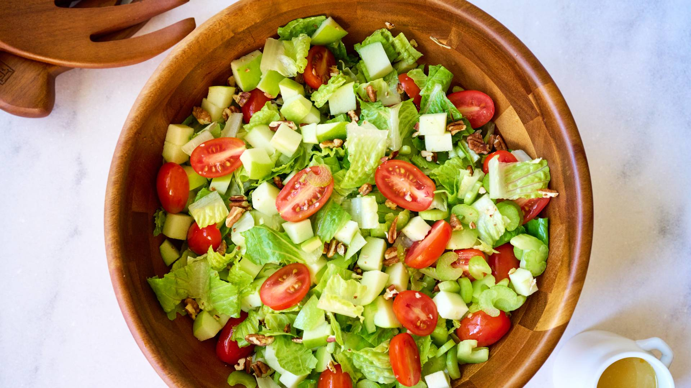
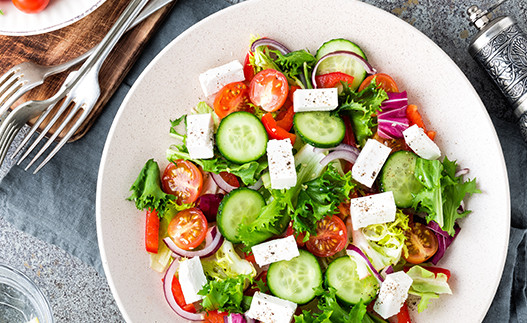
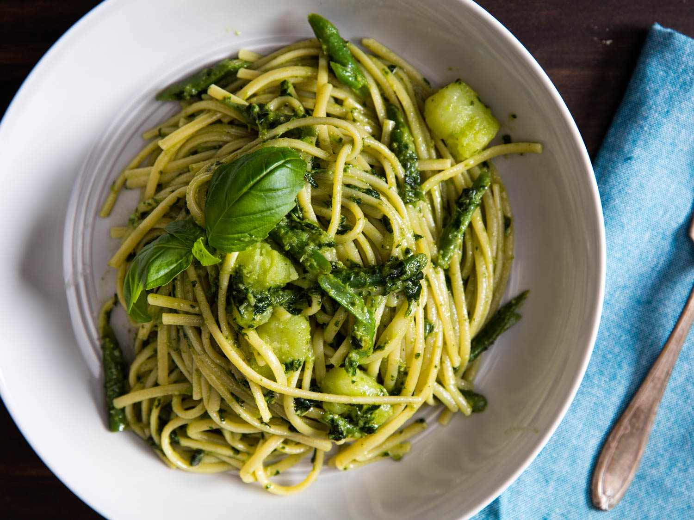
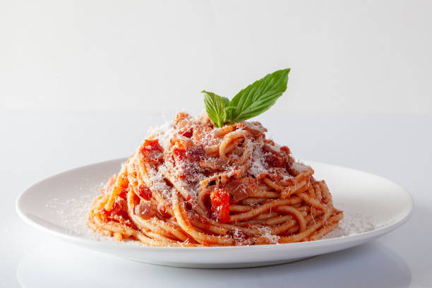
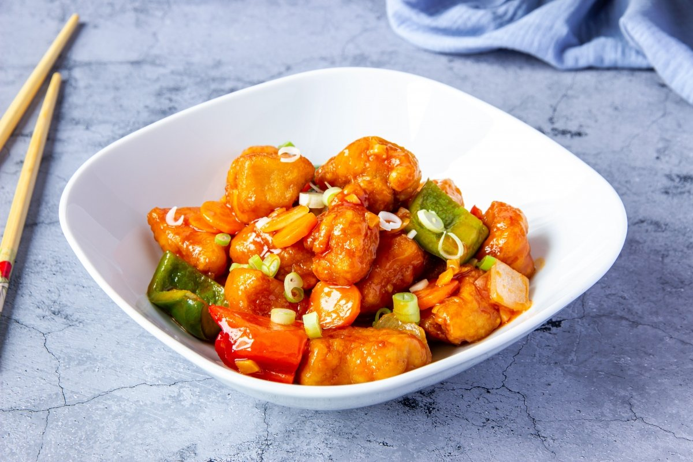
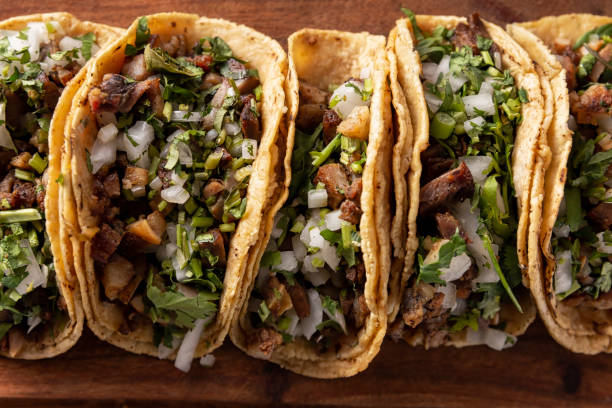

Postres
Pastel de Chocolate
- 200g de harina
- 100g de cacao en polvo
- 3 huevos
- 200ml de leche
Un pastel suave con intenso sabor a chocolate. Se mezcla todo, se hornea 35 min y se decora con fresas.

Helado Artesanal
- 500ml de crema
- 100g de azúcar
- 1 vaina de vainilla
- Galletas trituradas
Helado cremoso sin máquina. Se congela la mezcla y se revuelve cada 30 minutos hasta endurecer.
Ensaladas

Ensalada Verde
- Lechuga fresca
- 1 palta en cubos
- Tomates cherry
- Vinagre balsámico
Ideal como entrada. Se mezclan los ingredientes y se sirve fría con un toque de aceite de oliva.

Ensalada Griega
- Queso feta
- Pepino en rodajas
- Aceitunas negras
- Orégano seco
Fresca y saludable. Combina sabores mediterráneos y se adereza con limón y aceite de oliva.
Pastas

Pasta al Pesto
- 200g de pasta
- 50g de albahaca
- 2 dientes de ajo
- 50g de piñones
Una receta italiana clásica. La salsa pesto se licúa y se mezcla con la pasta cocida.

Espagueti Clásico
- 250g de espagueti
- 2 tomates maduros
- 1 cebolla
- Queso parmesano
Se prepara una salsa de tomate casera y se mezcla con espagueti al dente. Se sirve con queso.
Comidas

Pollo Agridulce
- 500g de pollo
- 1 pimiento rojo
- 2 cdas de salsa agridulce
- 1 cebolla
Una receta asiática con trozos de pollo salteado, verduras y salsa agridulce espesa.

Tacos Mexicanos
- 6 tortillas
- Carne asada
- Cilantro y cebolla
- Rodajas de lima
Auténticos tacos callejeros. Se calientan las tortillas, se rellenan y se decoran con cebolla y cilantro.